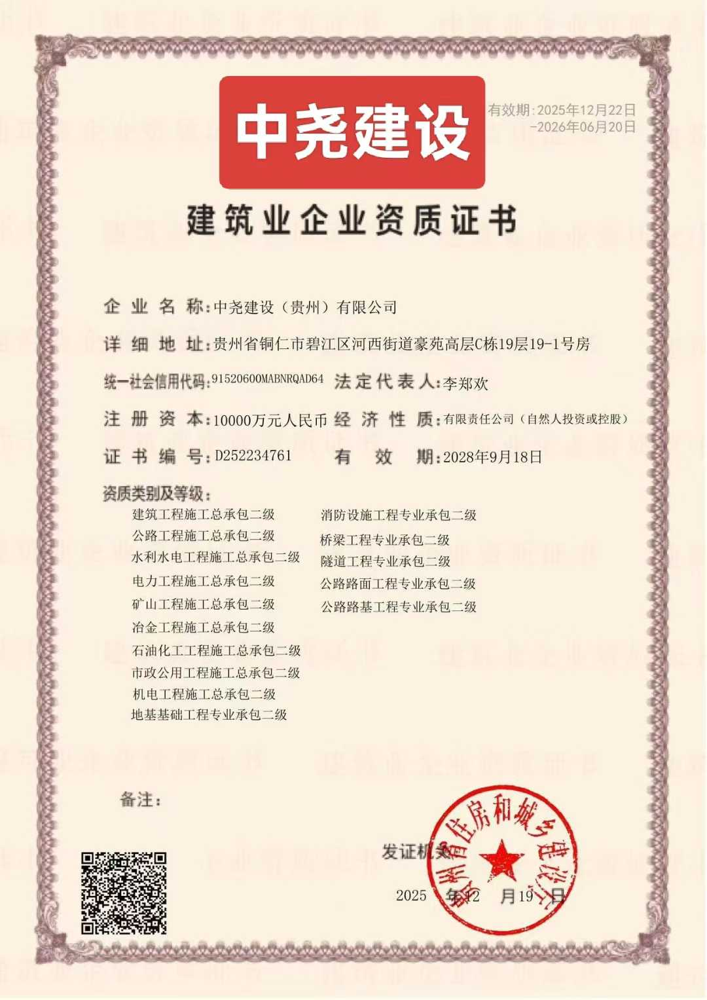
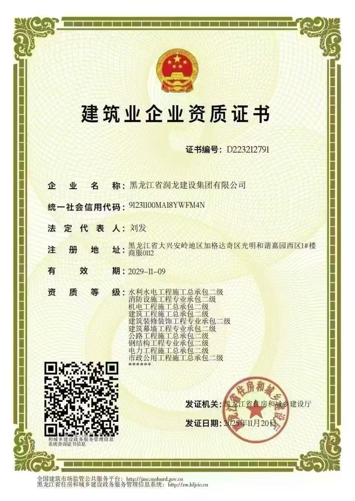
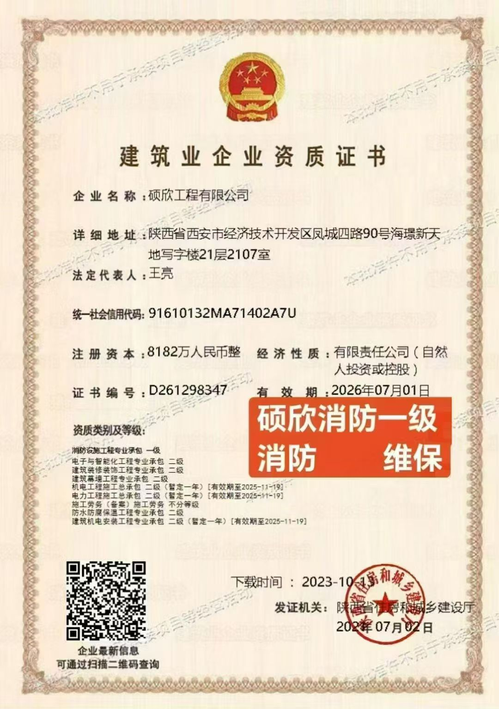

十局建工（商丘）集团有限公司
1.地基基础工程专业承包壹级 2.起重设备安装工程专业承包壹级 3.电子与智能化工程专业承包壹级 4.消防设施工程专业承包壹级 5.防水防腐保温工程专业承包壹级 6.建筑装修装饰工程专业承包壹级 7.建筑机电安装工程专业承包壹级 8.建筑幕墙工程专业承包壹级 9.城市及道路照明工程专业承包壹级 10.环保工程专业承包壹级 11.建筑工程施工总承包贰级 12.公路工程施工总承包贰级 13.水利水电工程施工总承包贰级 14.电力工程施工总承包贰级

中尧建设(贵州)有限公司
1.建筑工程施工总承包二级2.公路工程施工总承包二级 3.消防设施工程专业承包二级 4.桥梁工程专业承包二级 5.水利水电工程施工总承包二级6.隧道工程专业承包二级 7.电力工程施工总承包二级 8.公路路面工程专业承包二级9.公路路基工程专业承包二级 10.矿山工程施工总承包二级 11.冶金工程施工总承包二级 12.石油化工工程施工总承包二级13.市政公用工程施工总承包二级 14..机电工程施工总承包二级 15.地基基础工程专业承包二级

黑龙江省润龙建设集团有限公司
1.水利水电工程施工总承包二级 2.消防设施工程专业承包二级 3.机电工程施工总承包三级 4.建筑装修装饰工程专业承包二级 5.电力工程施工总承包二级 6.市政公用工程施工总承包二级 7.建筑幕墙工程专业承包二级 8.公路工程施工总承包二级 9.钢结构工程专业承包二级

中辉佳业建筑工程有限公司
1.地基基础工程专业承包壹级 2.电子与智能化工程专业承包壹级 3.消防设施工程专业承包壹级 4.防水防腐保温工程专业承包壹级 5.建筑装修装饰工程专业承包壹级 6.建筑机电安装工程专业承包壹级 7.建筑工程施工总承包贰级 8.公路工程施工总承包贰级 9.港口与航道工程施工总承包贰级 10.水利水电工程施工总承包贰级 11.电力工程施工总承包贰级 12.矿山工程施工总承包贰级 13.冶金工程施工总承包贰级 14.石油化工工程施工总承包贰级

渝黔建设(河南)有限公司
1. 建筑工程施工总承包贰级 2. 公路工程施工总承包贰级 3. 水利水电工程施工总承包贰级 4. 电力工程施工总承包贰级 5. 矿山工程施工总承包贰级 6. 市政公用工程施工总承包贰级 7. 地基基础工程专业承包贰级 8. 电子与智能化工程专业承包贰级 9. 消防设施工程专业承包贰级 10. 防水防腐保温工程专业承包贰级 11. 桥梁工程专业承包贰级 12. 隧道工程专业承包贰级 13. 钢结构工程专业承包贰级 14. 建筑装修......

硕欣工程有限公司
1.消防设施工程专业承包一级 2.电子与智能化工程专业承包二级 3.建筑装修装饰工程专业承包二级 4.建筑幕墙工程专业承包二级 5.机电工程施工总承包二级(暂定一年)[有效期至2025-11-19] 6.电力工程施工总承包二级(暂定一年)[有效期至2025-11-19] 7.施工劳务(备案)施工劳务不分等级 8.防水防腐保温工程专业承包二级 9.建筑机电安装工程专业承包二级(暂定一年)[有效期至2025-11-19]

恒振建设(河南)有限公司
1.地基基础工程专业承包壹级 2.起重设备安装工程专业承包壹级 3.电子与智能化工程专业承包壹级 4.消防设施工程专业承包壹级 5.防水防腐保温工程专业承包壹级 6.建筑装修装饰工程专业承包壹级 7.建筑机电安装工程专业承包壹级 8.建筑幕墙工程专业承包壹级 9.城市及道路照明工程专业承包壹级 10.环保工程专业承包壹级 11.建筑工程施工总承包贰级 12.公路工程施工总承包贰级 13.水利水电工程施工总承包贰级 14.电力工程施工总承包贰级

中桉建设有限公司
1.地基基础工程专业承包壹级 2.电子与智能化工程专业承包壹级 3.消防设施工程专业承包壹级 4.建筑装修装饰工程专业承包壹级 5.建筑机电安装工程专业承包壹级 6.古建筑工程专业承包壹级 7.环保工程专业承包壹级 8.建筑工程施工总承包贰级 9.公路工程施工总承包贰级 10.水利水电工程施工总承包贰级 11.电力工程施工总承包贰级 12.石油化工工程施工总承包贰级 13.市政公用工程施工总承包贰级

津潍建设发展有限责任公司
1.石油化工工程施工总承包二级 2.机电工程施工总承包二级3.建筑工程施工总承包二级 4.市政公用工程施工总承包二级 5.电力工程施工总承包二级 6.钢结构工程专业承包二级 7.城市及道路照明工程专业承包二级 8.地基基础工程专业承包二级 9.模板脚手架专业承包不分等级 10.建筑装修装饰工程专业承包一级 11.古建筑工程专业承包二级 12.输变电工程专业承包二级 13.环保工程专业承包二级 14.建筑机电安装工程专业承包二级

九局建工（河南）有限公司
1.地基基础工程专业承包壹级 2.起重设备安装工程专业承包壹级 3.电子与智能化工程专业承包壹级 4.消防设施工程专业承包壹级 5.防水防腐保温工程专业承包壹级 6.建筑装修装饰工程专业承包壹级 7.建筑机电安装工程专业承包壹级 8.建筑幕墙工程专业承包壹级 9.古建筑工程专业承包壹级 10.城市及道路照明工程专业承包壹级 11.环保工程专业承包壹级 12.建筑工程施工总承包贰级 13.电力工程施工总承包贰级 14.矿山工程施工总承包贰级

中润建工（贵州）建设有限公司
1.建筑工程施工总承包贰级 2.公路工程施工总承包贰级 3.水利水电工程施工总承包贰级 4.电力工程施工总承包贰级 5.市政公用工程施工总承包贰级 6.机电工程施工总承包贰级 7.消防设施工程专业承包贰级 8.防水防腐保温工程专业承包贰级 9.桥梁工程专业承包贰级 10.隧道工程专业承包贰级 11.钢结构工程专业承包贰级 12.建筑装修装饰工程专业承包贰级 13.建筑机电安装工程专业承包贰级 14.公路路面工程专业承包贰级

山西凌云志建设工程有限公司
1. 建筑工程施工总承包贰级 2. 电力工程施工总承包贰级 3. 石油化工工程施工总承包贰级 4. 机电工程施工总承包贰级 5. 地基基础工程专业承包贰级 6. 起重设备安装工程专业承包贰级 7. 电子与智能化工程专业承包贰级 8. 消防设施工程专业承包贰级 9. 防水防腐保温工程专业承包贰级 10. 钢结构工程专业承包贰级 11. 建筑装修装饰工程专业承包贰级 12. 建筑机电安装工程专业承包贰级 ......